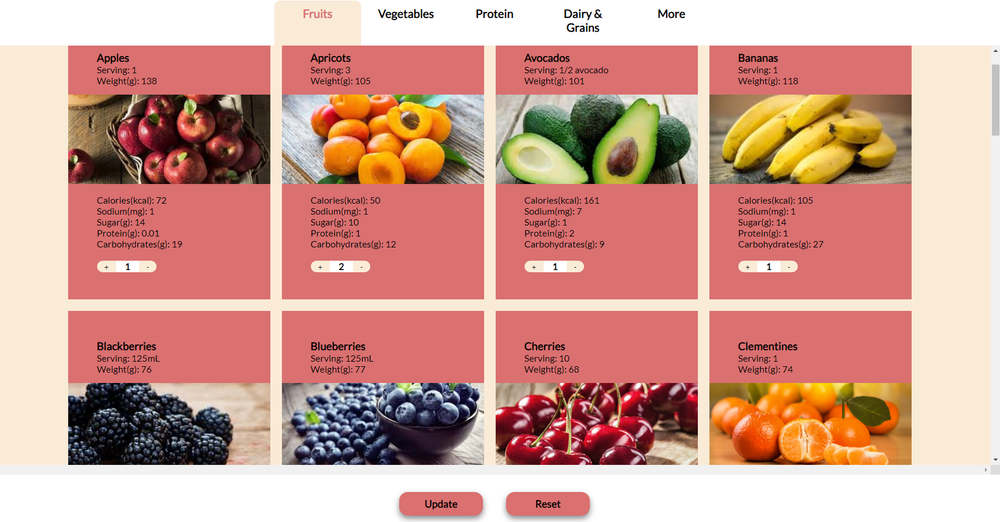
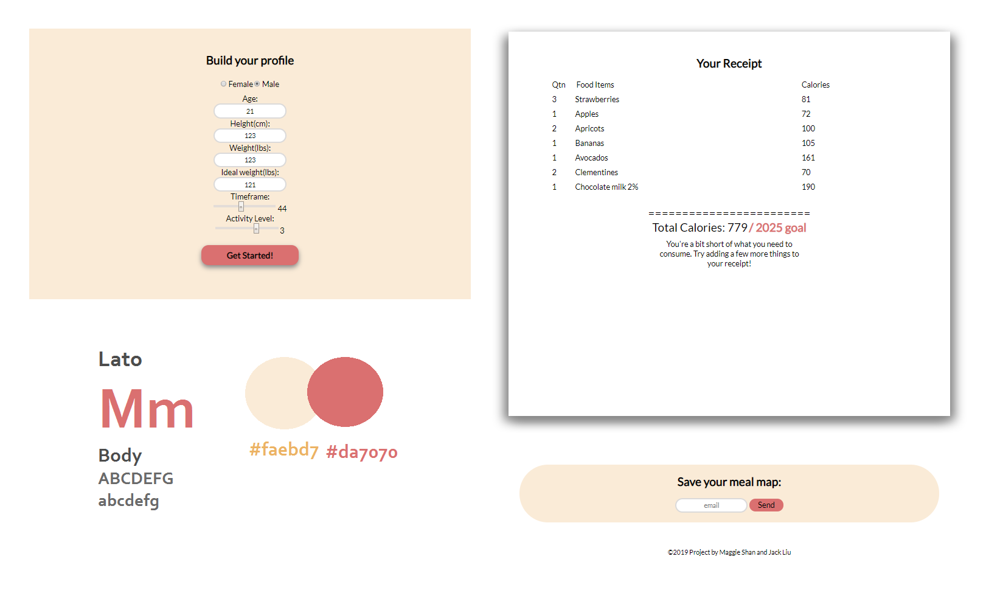

My Meal Maps
A team project built to provide a database of ingredients and their nutritional values to help users plan a healthy diet in accordance with their recommended calorie intake based on demographic and time frame.
Visit Site See CodeSkills
- HTML
- CSS
- JavaScript
- PHP / SQL
- Adobe Illustrator
Process
My Meal Maps aims to be a simple yet effective web application for users to easily monitor and customize their daily intake. The website acts as a "shopping cart" so users can quickly adjust food quantities based on their final nutritional value at the end. Through the various functions, this site promotes healthly meal planning using recommended calorie, sugar, sodium and protein intakes, as well as projecting realistic time frames.
 